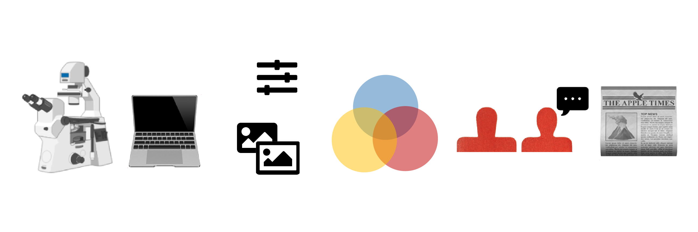
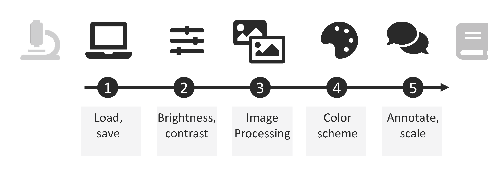
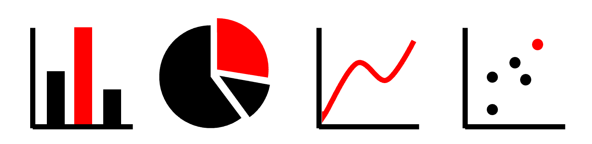
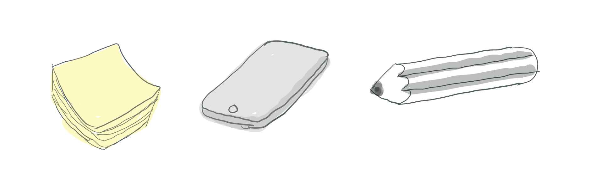

How to… Graphical abstracts 1
Graphical abstracts are increasingly common to explain biomedical concepts and research results. As “summary slides”, they have long been used at the end of a talk or lecture. Today, graphical abstracts are widely used as a thumbnail/preview of online publications and also found at posters, on lab websites, and in research grant applications. The key element of every graphical abstract are the visuals - pictograms, icons, or images. Text, arrows and lines then combine the visual elements into a narrated story, and color highlights key elements or encodes quantities. I summarized a few key points to consider before designing a graphical abstract.
Key visual: find icons and pictograms
All graphical abstract have key visuals and usually these are icons/pictograms or symbols, rarely also iconic microscope or photographic pics or charts. Pictograms can be hand-drawn, constructed with simple shapes, but most use ready-made icons.
Many icon libraries exist, many are free, and some even non-attributable (public domain). Libraries offer icons as PNG or SVG file. PNG, Portable Network Graphic, is a raster-graphics format for lossless data compression. PNGs are ready to use on the web or in software, but are not adaptable. SVG, Scalable Vector Graphic, is a vector images format that can be used interactively on the web, adapted with graphic software, and also used as image as is. Best: you can scale it as large as you like and no pixels will appear. Yay for large posters!
Libraries for general icons: - New versions of PowerPoint have inbuild, free image and icon libraries, as well as many pre-drawn shapes. - Fontawesome.org is a unicode-based icon library that also can be installed locally as a font for graphic programs or downloaded as SVG. - Nounproject is a large repository sourcing icons from various designers, hence the available icons are vast, but also not matched in style, icons can be used for free with attribution as SVG or PNG. - Another general resource is SVGrepo, which provides search functions for their icons for style such as color, rounded or sharp icons.
Biology and Medicine specific icons are in addition available. - Shapes of numerous animals, e.g. for phylogenetic trees, are available at phylopic.org/. - General scientific icons are provided at ebi.ac.uk/style-lab/general/fonts/v1.3/. - The https://reactome.org/icon-lib provides scientific pictograms and chemical drawings for free re-use and encourages the upload of user-designed pictograms for sharing with the scientific community. - SmartServier.com provides full slide-decks with medically-relevant icons and images - The company released a set of biology and laboratory icons, such as Petri dishes and model organisms, via Bioicons.com; both collections are available under free licenses (CC0). - In addition, healthicons.org provide simple icons for many specialized medical scenarios.
When selecting icons for a graphical abstract select or adapt them such that they have an overall similar appearance: same line-width, colors, and level of detail. Often icons in a library are made by the same design team and thus similar, but other libraries are open repositories from various sources and have distinct looks.
 What not do do…
 Improved Graphical Abstract with similar looking icons.
When a key visual should show data in the form of a chart, it is advisable to stick to the most common chart types, bar, line, pie chart or scatter plots. Most readers are familiar with these and they are founded on our core visual perception abilities, comparing lengths, angles, or slopes. For all charts ensure that only a few categories or data points are included and details, tick marks, axis label, legends, are omitted. 
Complex charts should only be used if they have e.g. iconic status to indicate a specific method was used: in life sciences t-SNE often symbolize single cell data was obtained, and red/green heatmaps indicate microarray data.
A good overview of chart types and their use is summarized in data viz catalogues (e.g., The Data Visualisation Catalogue): https://datavizcatalogue.com/
Tools
Graphical abstracts can be prepared with the same software also used for posters and figures. Suitable are vector-design software: - Adobe Illustrator (commercial) - CorelDraw (commercial) - Affinity Designer (commercial) - open-source: Inkscape
Vector-based graphics programs allow zooming in and out without quality loss. For most graphical abstracts PowerPoint will also produce sufficient results when slides are adjusted in size and exported as vector graphics, e.g., as PDF. To prevent pixelation select that images are not compressed in the options. A big plus of the open source Inkscape: it keeps getting better. Newest feature: direct import of icons from web-based icon libraries via “Import Web Image” tab. This works already for Bioicons and Reactome via dropdown. Also possible in Inkscaoe: script-based image processing, and script-based chart preparation. Another plus, Inkscape relies on the web vector format SVG and is thus readable by browsers and other vector graphics programs.
Web-based tools
A popular, however increasingly costly option are Biorender and MindtheGraph, that have annual subscription plans. Biorender has many sample templates for a quick start and vast icons for life sciences, but you must regularly check the licenses as they are adapted, as of now the first author must hold a premium license to publish their figures – which is tricky for labs as first author is often not the person making figures, or changes when leaving lab etc. Mindthegraph has a similar offer, but also provides design consulting.
Key message
Before starting the design process, spend a good amount of time brainstorming the key message you want to get across. I personally do this by doodling on paper and discussing with peers. Without a clear main message, it will be impossible to design a good graphical abstract. These days a quick conversation with ChatGPT may also help to towards summarizing an abstract to a punchy one-to-two sentences condensed version.
